MANUAL FOR TRACKER2D
Press the help button again at any time to close this window. Complain to the dev until he creates a proper navigable table of contents for this manual!
The most basic tutorial follows:
- Select an instrument from the instrument menu.
- The QWERTY row on a standard keyboard represents a Western chromatic scale; press any key there to select a note; plus and minus allow you to adjust your octave.
- When the "PEN" tool is selected (which it is when you first load up the application), clicking on a square will put instructions on the tile based on the parameters on the left.
- Once you have some instructions painted on the screen, press the play button in the lower left to get the bugs moving. Whenever they move over a grey tile, they'll play sounds based on the instructions in the tile.
The rest of this manual is intended to provide a highly detailed look into how Tracker2D functions. It may not always be up to date, and furthermore requires significant expansion and revision. It also may benefit from more elaborate visual styling, but I don't think that's quite as important beyond a very basic level.
UI FUNCTIONS
We need text here!
The Field
This is literally where the music happens. The way the UI is currently set up, you can see a 30*23 'slice' of the entire field (although this may change if we implement a zoom feature).
Depending on your current field setup, you may see up to 8 bugs and a variety of colorful tiles with various icons on them. What follows are some examples of tiles and how their parameters affect their appearance.
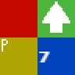
A few rules of thumb:
- The tile coloring algorithm assigns hue based on the instrument used, saturation based on volume, and intensity (brightness) based on the tile's pitch.
- Percussion instruments have a small "P" indicator on their tiles.
- The most prominent overlays will be indicators for what sort of flow control a tile contains. Due to graphical constraints, audio effects are currently not represented visually in any fashion whatsoever.
Someday, I intend to implement alternate coloration and graphics schemes that the user can switch between at will.
The Left Bar
This uses HTML5-based controls. From top to bottom, the following functions are available:
Minimap: This shows a small view of the entire field. Clicking anywhere on it will move your view to a different part of the field.
Pitch Indicator: This indicates your current pitch (we use mathematics to convert it into an actual pitch in hertz). When you press number keys and/or +/-, it changes. You'll also hear your instrument play.
Instrument Menu: This allows you to select which instrument is applied to the tile you're painting. It slides out when you roll over it so you can see the full names of the instruments.
Audio FX Menu: Use this dropdown menu to select an audio effect to apply to your current tile. You will also need to input a value into the text field below it.
Flow Control Menu: Use the "Change" button to select a flow control effect to apply to your current tile.
Volume Slider: Click and drag this slider to set the volume attribute for a tile.
Bug Storage: This shows the status of Tracker2D's 8 bugs (analogous to audio channels). By hovering over one of the boxes, you can see on the minimap the location of the corresponding bug. The other major functionality of this (click a box to toggle whether a bug is on the field or in storage) is mentioned in the UI.
Tick Counter: This shows how many units of time/tempo have passed since the last reset. It is updated by both manual resets and the reset tile.
Facebook: This takes you to Tracker2D's Facebook page, which opens in a new window. Pretty basic.
The Bottom Bar
This uses jQuery controls and HTML5 Canvas for icons. There are two rows, but tools with similar effects are placed together. Some tools have a selection indicator (a blue overlay).
First, the field painting bloc:
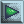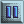Play/Pause Button: Changes state when clicked. Clicking it when it shows the play icon will the bugs to move. Clicking it when it shows the pause icon will cause the bugs to stop moving. Please note that attempting to use many other tools will pause playback.
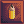Pen: Click on a tile in the field, and it will put the musical instructions you've selected in the left bar onto that tile. This tool supports click and drag.
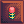Eraser: The eraser removes musical instructions from tiles that you click on. This tool supports click and drag.
Select: This tool allows you to select a rectangle of tiles on the field. It requires two clicks, but the rectangle can be as large as the field, or as small as a single tile. When this tool is selected, it draws a translucent grey overlay over the tiles you have used it to select. Furthermore, your selection is remembered until you draw a new one or perform file I/O (which uses the same 'buffer' functionality as this tool. If you replace the contents of your selection box by, for example, drawing inside it, this will not change the contents of the select buffer.
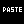 Paste:This tool pastes the current contents of the select buffer where you click (which specifically determines the upper left corner of where pasting begins). In the UI Properties window, you can switch between the dfeault overwrite paste mode and one that doesn't overwrite tiles that currently have instructions in them.
Paste:This tool pastes the current contents of the select buffer where you click (which specifically determines the upper left corner of where pasting begins). In the UI Properties window, you can switch between the dfeault overwrite paste mode and one that doesn't overwrite tiles that currently have instructions in them.
Query: When you hover over a tile in the field with this selected, a window will pop up that displays detailed information about the contents of not only the tile, but any bugs that are in the tile.
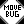Move Bug: This tool allows you to move a bug to a different tile. First, select the bug, then select the tile you want to move it to.
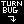Turn Bug: This tool rotates a bug in place. Currently, it only turns bugs clockwise. You can tell which direction a bug is heading in by looking at the direction their "nose" points.
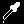Eyedropper: When you click a tile with this tool activated, your current options in the left bar will change to those in the tile you've clicked.
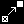Pointer Adjuster: This tool makes the first tile you click with it point to the second tile you click with it.
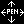Arrow Pen: This is an alternate painting method to the normal pen that uses the keyboard. You can reposition the 'cursor' of the arrow pen (a yellow translucent overlay) by clicking on the map. Then, you can move it one tile at a time by pressing arrow keys on the numpad (2/4/6/8). Press "5" to change whether it paints tiles with your current properties or not when you move it around.
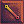Extrapolator: This tool requires you to select two tiles on the field. If the tiles contain data in them, it draws a line between them; the data in the line's tiles is 'extrapolated' into a gradual transition between the values in the tiles you clicked. You can change which tile property is used in the UI properties menu.
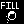Fill Selection: Once you've selected a rectangle using the select tool, you can use the fill button to replace all the tiles in the selection with your current tile. This is more useful from an art perspective than it is for music.
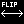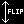Selection Flippers: These tools flip your current selection horizontally or vertically. You don't need to have the selection tool active to use these. Please note that using them sets your paste mode back to overwrite mode.
The menu bloc:
Help: This pulls up the manual you're reading (or alternatively dismisses it if's already open). You presumably figured that out when you clicked on it in the first place. However, if you've been following the repository, there's always the chance you opened up this manual separately instead of looking at the iframe it spawns in.
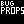Bug Properties: This is very underdeveloped. Currently, it allows you to adjust the volume for bugs, which is multiplied by tile volume.
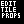Edit Tile Properties: Click a tile on the field when this is selected to open a menu allowing you to manually adjust many of its parameters. This is currently the only way to set a tile's "flow control value" (which is currently only used for the counter).
Song Properties: This menu allows you to adjust global properties for a song, including attribution data. It's currently also the location of the one UI option, at least until a new UI menu is created.
 UI Properties: This menu allows you to alter some aspects of how you interact with Tracker2D and edit files. These settings are saved between sessions, but not URLs - so if you change UI settings on the Github pages version, for instance, they won't change on Kongregate.
UI Properties: This menu allows you to alter some aspects of how you interact with Tracker2D and edit files. These settings are saved between sessions, but not URLs - so if you change UI settings on the Github pages version, for instance, they won't change on Kongregate.
The file I/O bloc:
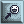Store Bug Positions: When you click this button, the current locations of your bugs are stored. This includes the storage unit on the left side of the screen, and it pauses any playback that might be occuring.
Restore Bug Positions: This moves your bugs back to wherever they were when you last clicked the "Store Bug Positions" button or loaded a new file, depending on which is more recent. Bugs will be moved into or out of the storage unit. Like the bug storing function, it also pauses playback.
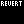Revert: As the program explains when you click this button, Revert attempts to change the tiles on the field to what they were when you last saved or loaded a file. This doesn't affect the positions of your bugs.
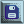Save File: This pulls up your browser's download dialog, allowing you to save a Tracker2D file to your computer. Currently the files are stored as plain text, which means you can technically edit them manually if you understand the format well enough, although it's not recommended in most cases. Note that the file saving routine calls the same "store bugs" routine as the "Store Bug Positions" button.
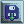Load File: This pulls up a dialog allowing you to load a text file from your computer that hopefully matches the Tracker2D format. I should probably change the extension on these things at some point. The loader then interprets the file as a Tracker2D field; in the process, it calls the "Restore Bug Positions" algorithm.
The Dialog Windows
As of this writing, there are four of these that have any thing interesting within them.
Bug Properties
Currently, the only purpose of this window is that it lets you adjust the volume multiplier on a bug, which is multiplied by the volume data of a tile to get the total playback volume of a sample. Use this sparingly; at its absolute lowest it can combine with tile volume to reduce a sample's volume to an essentially inaudible 0.01%.
UI Properties
As previously mentioned, the settings here alter how you interact with Tracker2D, and are saved between sessions. A list of options available through here follows.
- Paste Style:
Tracker2D has two ways of pasting data from the select buffer. By default, it overwrites every tile in the rectangle where you paste, but in mix-paste mode, it only overwrites empty tiles and leaves tiles with data in them alone.
- Extrapolate Style:
You can choose three different types of data to use for the extrapolator - note pitches, volumes, or the 'audio effect' value (as distinguished from the type of audio effect in a tile). Pitch is extrapolated by default.
- Play Sample When Pitch Key Is Pressed:
When this is selected, pressing keys on the home row (assuming a QWERTY keyboard) to choose a pitch will cause your current instrument to play at the chosen pitch and with any audio FX you have applied.
- UI Colors:
This allows you to change how Tracker2D looks, in case the somber, minimal greyscale color scheme isn't to your liking. Each UI element takes an RGBA string - four integers separated by commas. Acceptable values are described in the menu itself. If your input is invalid, it won't go through, and Javascript will generate an alert telling you what you did wrong. If your current color scheme isn't to your liking, you can always use the reset button to change it back to the default.
Tile Properties
Click this button, and then click a tile on the field, and you will open up a more detailed editing window that allows you to edit a single tile in ways that are otherwise inaccessible; read on for more information about those.
- Flow Control Value:
Currently only used for the counter effect. Each flow control effect can potentially have an integer associated with it; in the case of the counter this is decreased when a bug moves over the tile, or used to trigger a tile change when its value is zero.
- Points To The Tiles At These Coordinates:
Each tile on the field can "point" to another tile on the field - in other words, it stores the location of another tile, as opposed to the contents of the tile at said location. Certain flow control effects use this pointer to govern some aspect of their behavior. The "Flow Control" section of this manual describes these specifics in more detail.
Song Properties
Important field information is stored here; these values are stored at the end of a savefile, along with an internal version number (which is not user-updatable and is used to improve backwards compatibility).
Tempo:
Represents how fast the song is in beats per minute; this defaults to 120. Tempos can range anywhere from 1 to 999 BPM, although I personally don't recommend pushing your tempos to values that are too extreme.
Playfield Size:
Use this to adjust your filesize in increments of 64 tiles, up to a maximum of 512*512 tiles. Due to the current state of implementation, I recommend only enlarging your files when you're certain you will need more space. Each expansion gives you more room than the last, but also makes the program more resource intensive.
Song Metadata:
These fields allow you to declare the author and title of a track, as well as write a description. The default values are rather derogatory.
Effect Reference
Tracker2D gives you a couple ways to adjust the sound and playback order of tiles.
Audio Effects
Keep in mind that it is currently only possible to apply one audio effect to a tile at a time. This may be changed in the future, although it would require significant revision to the audio playback engine.
- Bend Pitch: Multiplies the pitch of a note by a value between 0 and 16. Useful for pushing an instrument beyond its 6 octave range, transposing without changing notes, or creating microtonal music.
- Lowpass: Removes frequencies above the input value from a sound. Takes values between 0 and 20,000. This filter is applied after any pitch shifting.
- Highpass: Removes frequencies below the input value from a sound. Takes values between 0 and 20,000. This filter is applied after any pitch shifting, and is generally very similar to lowpass.
- Stop Playback: Cuts off a sample once a certain percentage of it has played. Takes values between 0 and 100.
- Start From Later: Causes a sample to play from its middle. Like "Stop Playback", takes values between 0 and 100.
Flow Control Effects
These effects do not change the sound of a tile, but they change how bugs interact with the field. Many of them rely on a tile's "pointer" value, which indicates another tile on the map that they point to. On the field, a flow control is indicated with an overlay.
-
Turn Signals: When a bug passes over this tile, it will turn in the direction indicated.
-
Counter: When a bug passes over this tile, the counter's value will decrease by 1. When the counter reaches 0, the tile will turn into an exact and deep copy of the tile it is currently pointing to.
-
Incrementer: When a bug passes over this tile, the value of the counter in the tile that this tile is pointing to will increase by 1.
-
Teleport: When a bug passes over this tile, they will be moved (after playing the tile's computed sound) to the tile that the teleporter tile points to. Their current direction will not change.
-
Freeze: When a bug passes over this tile, all playback pauses. This tile is best used to end a song, and to allow a user to manually restart by restoring bug positions if they so desire.
-
Revert: When a bug passes over this tile, all bugs are moved back to their initial positions stored in memory (which is updated whenever the user presses the "Store Bug Positions" button, whenever they save a file, or whenever they load a file). Playback does not pause. This is best used for looping music.
Tips and Tricks
- If you have a lot of bugs playing the same notes and instruments, small pitchbends (0.99, 1.01, etc) can help reduce clipping.
- Even after fields larger than 64*64 are implemented, Tracker2D will probably still be pretty small. Experiment with the flow control to see how efficiently you can utilize space!
How Tracker2D Works
Here, I'm hoping to provide a basic idea of how the code that supports this program functions.
This program relies very heavily on the HTML5 Canvas and Web Audio APIs in order to simplify various tasks important to its functioning. With graphics and audio being fairly abstracted, much of the code I write pertains to things like user input, file operations, and the occasional bit of number crunching.
Tracker2D preloads its entire soundbank before allowing the user to operate it. This can take some time depending primarily on the speed of the user's internet connection, but generally should not be too long on modern connections, as the 4 megabytes of samples actually represents the majority of the program's size. Other parts of the program are not prebuffered due to this lopsided sound to code, text, and images ratio. In the future, the sound bank may be extended further (so far, a sound effects bank and a synthesizer sound bank are planned), which would skew the ratio even more.
Understanding the main loop is a good place to get started on your journey to really grokking Tracker2D. It essentially functions as the core of a game engine, and there are two especially important points I need to immediately bring up:
- The main loop is designed to run as often as possible, but also to keep everything synchronized, hence the use of a delta timer.
- Tracker2D's computation functions are ideally separated from its conveyance (rendering) functions, so that if the program visibly slows down or "lags" (appears especially choppy due to its framerate lowering), things like sound playback and field state updates should be at least somewhat resistant to performance problems.
To be fair, Tracker2D does not have particularly demanding graphics, so your performance should theoretically be primarily a function of how good your CPU is (and possibly your sound card and graphics card, depending on what tasks the CPU can offload onto them). I have had little opportunity to analyze the performance of Tracker2D, so you can add benchmarking to the list of development tasks I would be greatly thankful for you assisting me with.
These sections are very incomplete (or perhaps not even written yet), even compared to some of the others.
The Rendering Loop
Like most programs with any sort of graphics, Tracker2D performs a great deal of graphics functions at any given time. While the actual graphical elements are again very simple (and essentially placeholders barring the creation of more detailed artwork), the graphics rendering loop isn't. This section only refers to graphics tasks handled with HTML5 Canvas - there are several important ones that are handled using standard HTML DOM elements.
- After blanking the canvas at the beginning of the loop, Tracker2D first draws a simple background.
- Tracker2D then draws the tiles, starting with a grid to distinguish them and indicate the overall size of field elements. After this, it computes the viewable area of your current file and paints tiles in said area. Once the colors are painted, the program continues by drawing any relevant overlays. This includes not only indicators of tile data type, like flow control, but overlays that extend beyond a single tile, like that of the selection buffer.
- We then call the bug drawing routine, which unlike the rest of the graphics code is a method of the Bug object. Bugs have a small arrow overlay (that you could interpret as a nose with the current graphics) that's added after the bug itself is painted on the screen.
- The final step of each instance of the rendering loop is to draw Canvas based UI elements. The most obvious examples of these are the bottom toolbar and the minimap.
Tiles
(Intentional) Bug Behavior
The Tracker2D Field File Format
More text and better formatting coming eventually.